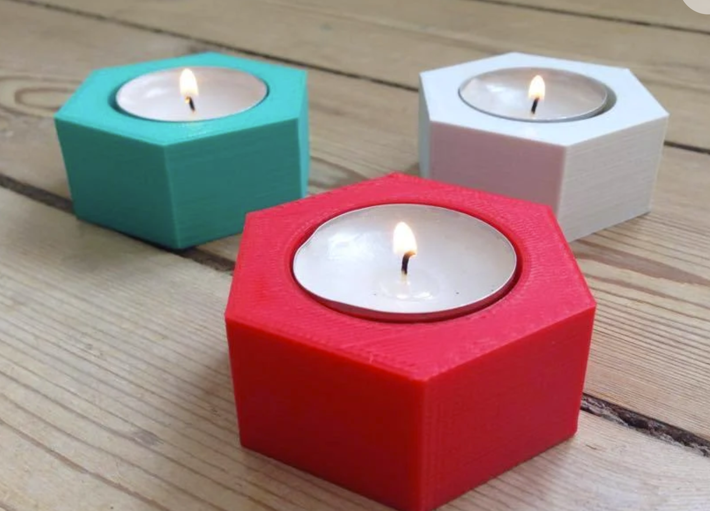
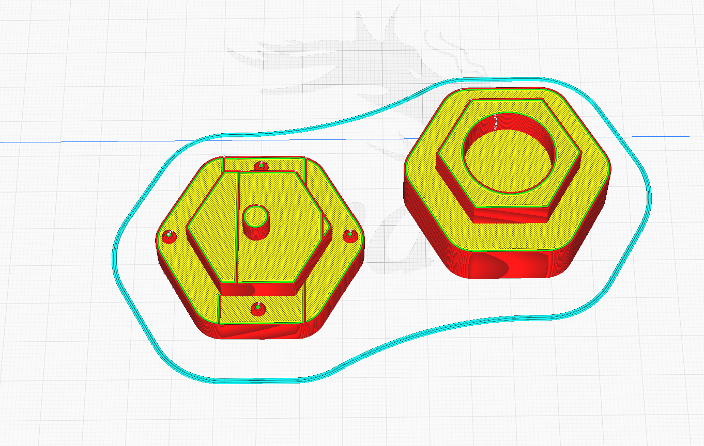
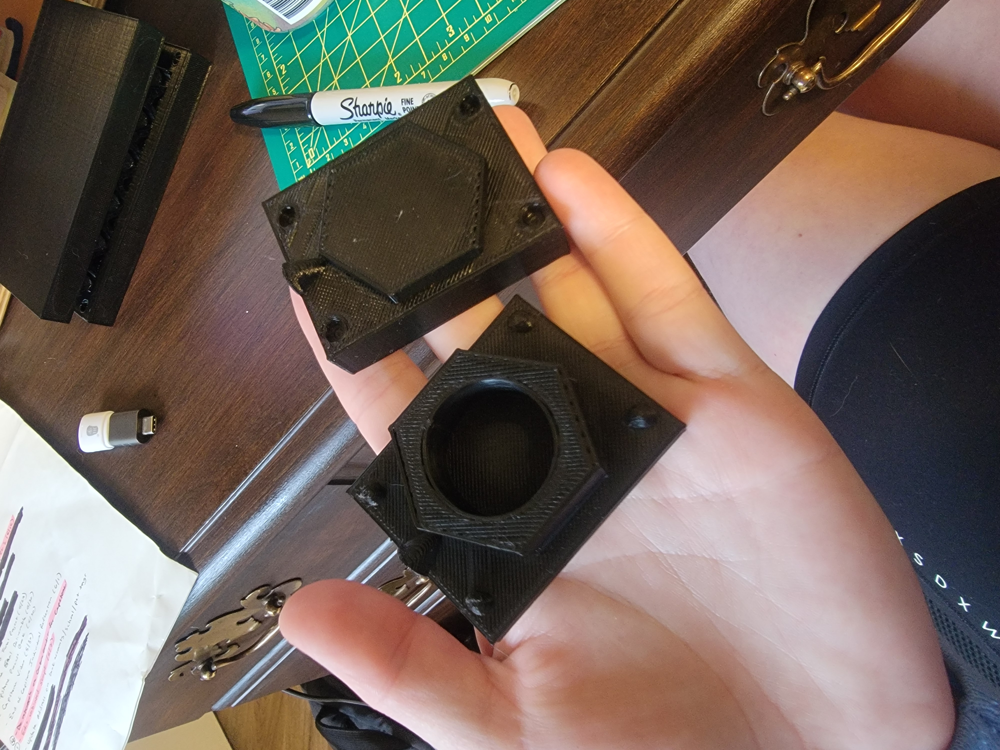

Here is my first mold Cura file, final mold Rhino file, and final mold Cura file.
For this assignment, I wanted to make a mold of this Thingiverse Hexagonal Candle Holder. I envisioned it to be a fairly simple mold to make and would beneift my endless supply of candles I have at home.
I went about designing the initial mold in Rhino, where I leveraged the video Rene suggested and this walkthrough that I found. I had gotten most of the way through the process to the point where I exported the file to Cura to see how long it would take to print. I realized that I put the pouring hole in the wrong place and went back to fix it only for my Rhino to crash taking my file down with it :,)))))
I then redesigned the mold, more properly designing it with a rectangular frame to make it easier to pour the silicone and placing the pour spout in a place that actually makes sense.
